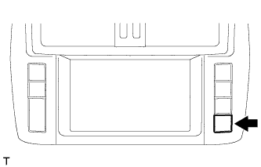

СИСТЕМА НАВИГАЦИИ (для моделей с DVD) > ПРОВЕРКА / СБРОС КОДОВ DTC |
| ПРОВЕРЬТЕ DTC (С ПОМОЩЬЮ ПОРТАТИВНОГО ДИАГНОСТИЧЕСКОГО ПРИБОРА) |
Подсоедините портативный диагностический прибор к DLC3.
Установите замок зажигания в положение ON (ВКЛ).
Включите портативный диагностический прибор.
Войдите в следующие меню: Body / Navigation System / DTC.
Проверьте и запишите коды DTC и данные фиксированного набора параметров.
Обратитесь к описанию кодов DTC (Нажмите здесь).
| Система | Следующий шаг |
| Аудиовизуальная система (для моделей с системой навигации) |
Нажмите здесь
|
| Развлекательно-информационная система для задних пассажиров |
Нажмите здесь
|
| Сенсорная система помощи при парковке TOYOTA (для моделей с 8 датчиками) |
Нажмите здесь
|
| Система помощи при парковке |
Нажмите здесь
|
| Система широкоугольного монитора переднего вида |
Нажмите здесь
|
| Система монитора бокового обзора (для моделей с системой помощи при парковке) |
Нажмите здесь
|
| УДАЛИТЕ DTC (С ПОМОЩЬЮ ПОРТАТИВНОГО ДИАГНОСТИЧЕСКОГО ПРИБОРА) |
Подсоедините портативный диагностический прибор к DLC3.
Установите замок зажигания в положение ON (ВКЛ).
Включите портативный диагностический прибор.
Войдите в следующие меню: Body / Navigation System / DTC.
Удалите DTC.
| ЗАПУСК РЕЖИМА ДИАГНОСТИКИ |
Есть 2 способа запуска режима диагностики. Войдите в режим с помощью одного из следующих методов.
Метод 1
Запустите двигатель.
Удерживая выключатель "INFO TEL" нажатым, управляйте переключателем освещения: выкл → вкл → выкл → вкл → выкл → вкл → выкл.
Запускается режим диагностики, отображается экран "System Check Mode" (режим проверки системы). Проверка работы запускается автоматически, результаты отображаются.
Метод 2
Запустите двигатель.
|  |
Нажмите на выключатель "DISP".
Находясь в окне регулировки качества дисплея, коснитесь углов экрана в следующем порядке: верхний левый → нижний левый → верхний левый → нижний левый → верхний левый → нижний левый.
| *a | Левый верхний |
| *b | Левый нижний |
Запускается режим диагностики, отображается экран "System Check Mode" (режим проверки системы).
| ЗАВЕРШЕНИЕ РЕЖИМА ДИАГНОСТИКИ |
Выключите зажигание.
| ДИАГНОСТИКА НЕИСПРАВНОСТЕЙ |
Нажмите кнопку "Failure Diagnosis" (диагностика неисправностей) на экране "Service Menu" (меню обслуживания).
Отображается экран "Failure Diagnosis" (диагностика неисправностей).
| ПРОВЕРКА СИСТЕМЫ |
Нажмите кнопку "System Check" (проверка системы) на экране "Failure Diagnosis" (диагностика неисправностей).
 |
Отображается экран "System Check Mode" (режим проверки системы).
| ПРОВЕРЬТЕ DTC (С ПОМОЩЬЮ ЭКРАНА РЕЖИМА ПРОВЕРКИ СИСТЕМЫ) |
Проверьте результаты проверки системы.
Если после проверки отображается результат "EXCH" или "CHEK", прикоснитесь к экрану в этом месте для просмотра содержимого.
Просмотрите результаты на экране "Unit Check Mode" (режим проверки устройства) и запишите их.
Для просмотра результатов проверки другого устройства нажмите кнопку "Back", чтобы вернуться на экран "System Check Mode" (режим проверки системы).
| УДАЛЕНИЕ / ПОВТОРНАЯ ПРОВЕРКА DTC (УДАЛЕНИЕ С ПОМОЩЬЮ ЭКРАНА РЕЖИМА ПРОВЕРКИ СИСТЕМЫ) |
Удалите DTC.
Нажмите и удерживайте выключатель "Memory CLR" (сброс памяти) в течение 3 секунд.
Убедитесь, что результаты проверки удалены.
Повторная проверка
Нажмите кнопку "Recheck".
Убедитесь в том, что при выводе всех результатов проверки отображается "OK". Если для результата не отображается "OK", произведите поиск и устранение неисправностей еще раз.